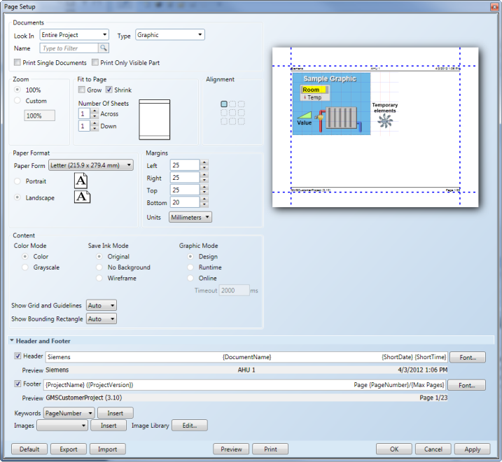
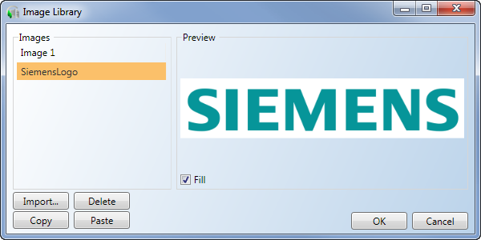
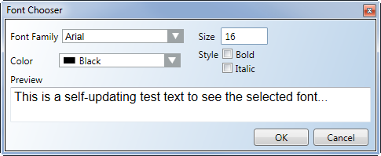

Page Setup View
The Page Setup pane is available from the Printing group or the File menu of the Home tab. Once displayed, the pane can be docked in the dock panel, just like the other Graphic Editor views.

Page Setup Pane
Page Setup Pane | ||
Section | Field | Description |
Documents | Look In | Select a print option from the drop-down menu to choose what to print:
NOTE: When either one of the above options are selected, the Type and Name options are inactive.
|
Type | Select what type of document to filter. Only active when the Entire Project option is chosen in the Documents section. | |
Name | Enter text to filter by a document’s name. | |
Print Single Documents | Print the documents selected in the Look In field as one single document. No print preview provided if this option is chosen. NOTE: Disabled if Current Document is selected. | |
Print Only Visible Part | Print only the area of the current document that is visible and has the current focus. NOTE: In the Graphics Viewer, this feature is enabled by default. | |
Zoom | 100% | View the document at a 100% zoom-factor. |
Custom | Enter a value to adjust the zoom-factor rate at which you want to view the document. | |
Fit to Page | Grow | Increase the graphic to fit on the selected number of pages as entered in the Number of Sheets area. |
Shrink | Decrease the graphic to fit on the selected number of pages as entered in the Number of Sheets area. | |
Number of Sheets | Across – Enter a value to specify how many sheets are displayed. Down - Enter a value to specify how many sheets are displayed vertically. | |
Alignment | Select the positioning of the graphics on the page. The sample graphic updates when you make your selection. | |
Paper Format | Paper Form
| Select a page size and format from the drop-down menu. |
Select the orientation of the printed documentation:
| ||
Margins | Left | Enter a value to set the left margin. |
Right | Enter a value to set the right margin. | |
Top | Enter a value to set the top margin. | |
Bottom | Enter a value to set the bottom margin. | |
Units | Select the measurement type to apply to the margin scale from the drop-down menu. Options include inches, millimeters, and pixels. | |
Mini Preview Pane | Display a sample graphic of how the document will print. The sample graphics automatically adjusts with each selection made in the Page Setup pane. Margins can be adjusted by clicking on the blue margin lines. | |
Content | Color Mode | Select how you want to print the content, header, and footer, choose from:
|
Save Ink Mode
| Select to either print the document in its original color state, or select from one of two ink-saving modes:
| |
Graphic Mode | Print documents in the following modes: In Design mode,the document prints:
In Runtime mode,the document prints:
In Online mode,the document prints:
| |
Show Grid and Guidelines | Specify how any enabled grid and guidelines on your document are printed. From the drop-down menu select one of the following:
| |
Show Bounding Rectangle | Select whether the bounding rectangle around the elements is visible on the printed document.
| |
Header and Footer | Add a customized header and\or footer to your documents, and then preview how they will appear on the documents. | |
Header\Footer Field | Display the text, keywords or images currently added to the Header or Footer field. | |
Font | Display the Font Chooser pane, which allows you to customize the header\footer font type, color, and size. | |
Preview | Display the text and substituted keywords that will display in the header/footer. NOTE: Images are not displayed in the preview filed. The substituted keywords show the final text, when possible. Some keywords are updated during the print process. | |
Keywords | Insert predefined text from the drop-down menu to display in the Header or Footer fields. | |
Images | Insert an image reference from the Image Library into the Header or Footer fields. | |
Image Library | Open the Image Library and add, modify, or delete images that can be inserted in the Header or Footer fields. | |
Print Setup Toolbar | Default | Return to the default Page Setup settings and disregard any selections made. |
Export | Save the current settings as a page setup (.xml) file for future use. | |
Import | Navigate to and select an existing page setup file (.xml) file to open and use on the selected items to print. | |
Preview | Apply the settings and display the selected documents in print preview. | |
Apply the settings and send the document to the selected printer. | ||
OK | Apply all selections made and close Page Setup. | |
Cancel | Close the dialog box and discard any selections made without printing anything. | |
Apply | Accept all selections made but do not print anything. | |
Image Library Window
The Image Library window is where you can view, import, and delete images that can be added to a document’s header or footer.
The Image Library window is accessed from Page Setup pane.

Image Library | |
Section\Field | Description |
Images | Display a list of available images that can be inserted into the header or footer of your document. |
Import | Display the Open dialog box that allows you to browse to and add images to the Image Library list. |
Delete | Delete the currently highlighted image in the Images list. |
Copy | Copies the bitmap of the selected image onto the clipboard. The Bitmap Transparency color is applied. |
Paste | Replaces the image data of the selected image with the bitmap in the clipboard. The Bitmap Transparency color is applied. |
Preview | Display the currently selected image from the Images list. Enable Fill check box to have the entire image displayed in the header or footer. |
OK | Save any changes made in the Image Library and closes the pane. |
Cancel | Do not save any of the changes made in the Images Library |
Font Chooser
The Font Chooser window allows you to customize the font settings for text in the Header and Footer fields of a document. Settings made are stored with the header and footer settings in the user settings.
The Font Chooser window is accessed from Page Setup window.

Font Chooser | |
Section\Field | Description |
Font Family | Display a list of available fonts that can be applied to the header or footer of your document. |
Size | Enter a font point size. |
Color | Select a color to apply to the text. |
Style | Apply Bold and Italic styling to the text. |
Preview | Display how the current font selections will be applied to the Header\Footer. The preview pane updates automatically every time a font setting is made. |
OK | Save selections made and close the Font Chooser pane. |
Cancel | Ignore any selections make and close the Font Chooser pane. |
Related Topics
For background information, see Printing in the Graphics Editor.
For related procedures, see Printing Graphics.